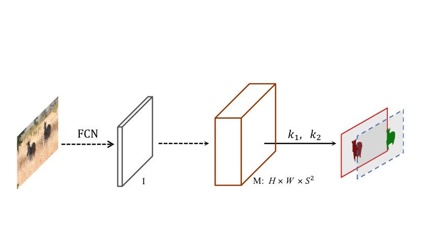
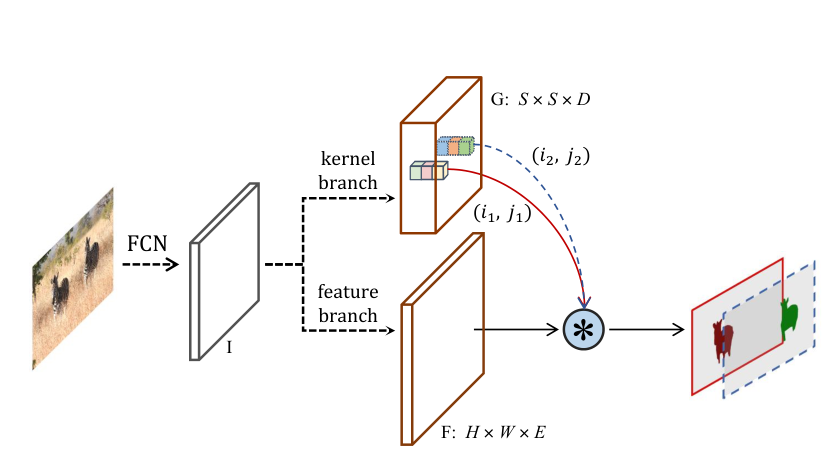
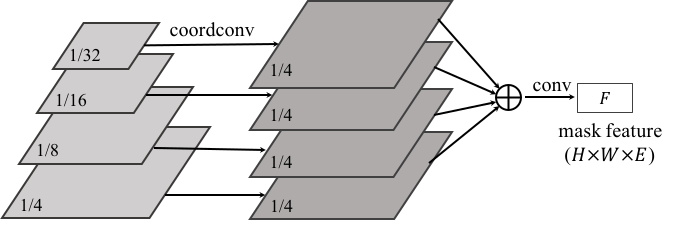

类别分支仍然保留；这张图只比较掩码的生成方式。


Wang et al., SOLOv2 · CC BY-NC-SA 4.0 · 两个原图面板分开展示，图像内容未改；点击放大。
根据图像和位置，生成该实例的卷积核。
保留空间细节，供不同实例核读取。
图中不同颜色的核作用于同一张 F，得到不同实例的掩码。“动态”指核由当前输入预测，不是固定的网络参数。

沿图从左往右看：P2–P5 分别经过卷积和上采样，统一到输入的 1/4 分辨率后相加，形成 F。深层特征还加入 x、y 坐标，让共享特征保留位置信息。
相邻网格可能预测同一个目标。Matrix NMS 先计算候选掩码之间的重叠关系，再并行降低重复候选的分数，并考虑抑制者自身是否已被压制。
得到待筛选的实例掩码。
一次组织两两重叠关系。
压低重复候选，保留实例结果。
记住三个词：动态核、共享特征、Matrix NMS。前两者生成掩码，后者处理重复候选；位置索引仍沿用 SOLO。